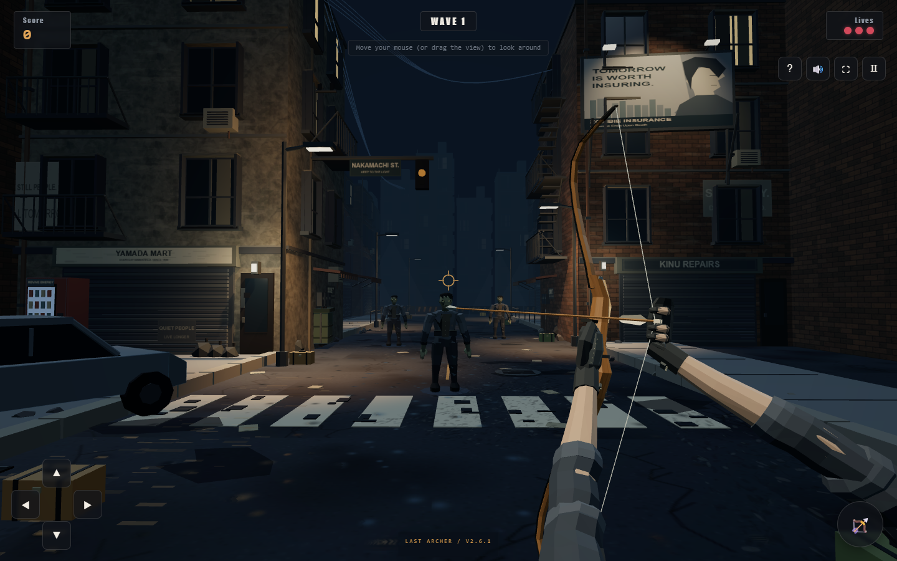

LAST ARCHER / V2.6.1 / LOCAL STUDYBOW & HANDS
Same street and gameplay. This pass changes the foreground bow, arrow, gloves and arms. Both sides are actual browser captures.
BEFORE / V2.6 AFTER / V2.6.1 / READY
AFTER / V2.6.1 / READY
The new bow has a carved grip, arrow shelf, layered limbs and fine colour grain. The hands have separate grip and three-finger draw poses, stitched glove panels, tapered forearms and rolled sleeves. These are still low-poly assets; fine skin, leather and cloth detail remains simpler than the concept.